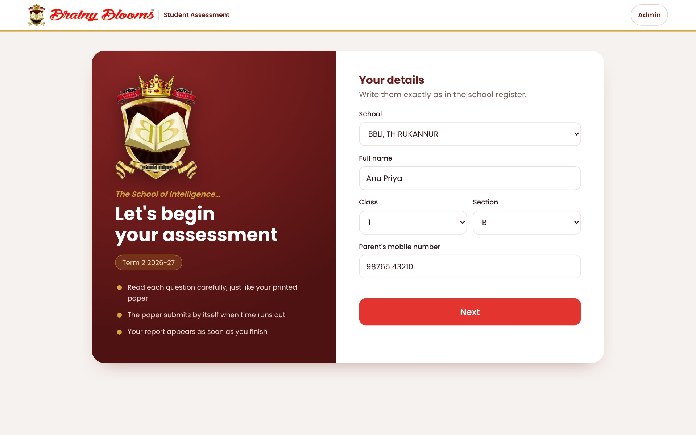
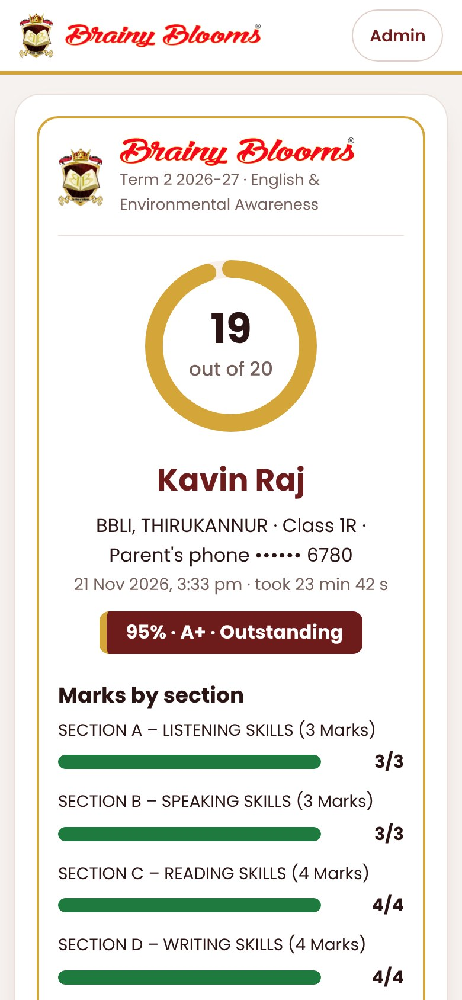

An online assessment website for a group of three CBSE schools near Puducherry. Children in Classes 1 to 8 take their term papers on screen, exactly as printed, including listening, speaking and reading aloud, with no teacher in the room. Staff see every child's report the moment the paper ends.


The schools ran term assessments on printed papers and Google Forms. Every English and Tamil paper has listening, speaking and reading-aloud sections, so a teacher had to read each passage out and listen to every child, one by one.
Rebuilding a paper as form questions also changed its layout, so children saw something different from what they had practised. And papers change every 2 to 3 months for each of 8 classes, so any new process had to be quick for teachers who are not technical.
What the schools needed: a child can sit the full paper alone, exactly as printed, and staff get a fair report straight away, at no running cost.
Sections, headings, notes, passages and pictures appear in the same order as print, with the marks beside each question. Children see the paper they practised, not a quiz.
Big tap buttons for options, Tamil letters and word order, so Class 1 children don't have to type.
Each listening passage plays in the teacher's own recorded voice, or a computer voice in English or Tamil, up to 5 times. For speaking and reading aloud, the child taps the microphone and speaks. The answer is recorded, turned into text and marked.
As soon as a child finishes, they see a certificate-style report with the score, percentage, grade and marks for each section, instead of waiting days for hand marking.
Teachers fill a Word template with simple tags, then admin staff upload the file. The site reads it in the browser and shows it exactly as students will see it, before saving.
Speech-to-text runs in the browser, so there are no paid AI calls while children take papers.
Capital letters, spaces and punctuation are ignored. The spelling must match one of the allowed answers, so a spelling mistake is wrong.
For open replies like "say any 2 of bath, brush, teeth", each listed keyword earns marks, up to the number needed.
The share of words read correctly sets the mark. 80% or more earns full marks; less earns a share, rounded to half a mark.
Drawings and free writing wait in a short queue for staff, and the report updates when they are marked.
My first idea was to turn papers into quiz questions. Listening to the school showed it was wrong: children needed the paper they practised, unchanged.
Young children can't manage passwords. Name, class, section and a parent's phone number are enough to start and to find the report later.
Teachers already write papers in Word. A template they fill in beat building a complex paper editor they would have to learn.
Dark mode on lab computers would flip the colours and confuse young children. Large tap targets suit small hands on phones and touchscreens.
| Challenge | What I did |
|---|---|
| Marking spoken answers with no teacher | Three rules: whole answer, keywords, and reading aloud (80% of words read earns full marks). |
| The template reader picked up its own instructions | Added a "QUESTIONS START BELOW" marker, so only the text after it becomes questions. |
| The Tamil text in the school's PDF was broken | Rebuilt the sample paper as a Word file with correct Tamil. |
| The free plan allows very little processing per request | Marks are worked out once, when a paper is submitted, and saved, so report pages stay light. |
| Reopening a paper to get extra time | Time left is always worked out on the server from the start time. |
| Uploaded files could carry harmful content | Students can upload only sound, and staff only pictures and sound from an allowed list, served with strict security settings. |
A child can finish a full English, EVS, Maths or Tamil paper, including listening and speaking, without an adult reading or listening.
Reports and section marks appear the moment a paper ends, instead of after days of hand marking.
A teacher fills the Word template and admin staff upload it. No developer needed.
Every release was tested end to end with automated browser tests: setup, paper upload, a child taking a whole Class 1 paper, recordings, teacher marking, summaries, Excel export and staff accounts, on phone and computer sizes. It is planned for about 3,000 students, which fits the free plan with smaller recordings and a clean-up step.
My first design, turning papers into quiz questions, was wrong. The school needed its own paper, unchanged. Listening first would have saved that step.
Hard limits helped. No teacher, no budget and no student login pushed the product towards automatic marking and a simple Word workflow.
Free plans need careful design. Working out marks once, at submit time, kept every request inside the free limits.